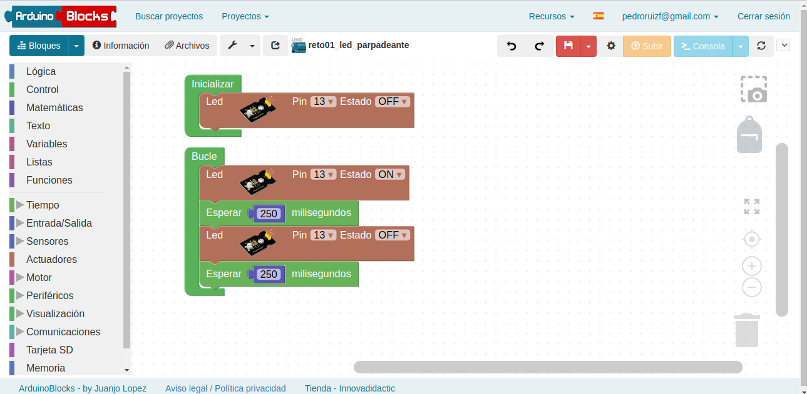

Arduinoblocks es el entorno de programación gráfico que vamos a usar para programar a Arduino o una esp32 como es el caso. Este entorno está desarrollado por Juanjo López y es online. Necesita una cuenta registrada en el sitio online de Arduinoblocks y el programa Arduinoblocks Connector ejecutándose en tu ordenador para poder hacer la conexión entre el entorno online y la placa arduino.
